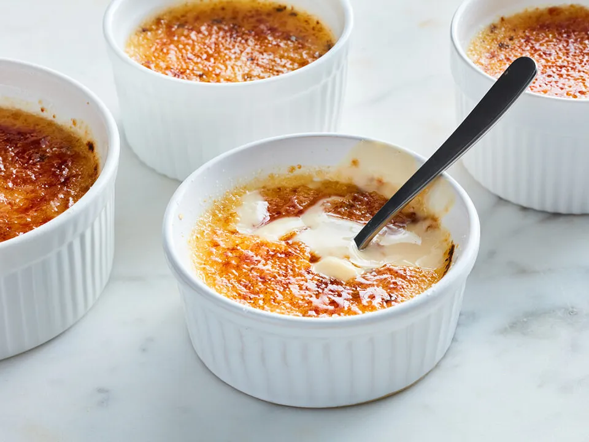

Classic Crème Brûlée Recipe
Ingredients:
- 6 egg yolks
- 6 tablespoons white sugar (plus extra for topping)
- ½ teaspoon vanilla extract
- 2 ½ cups heavy cream
- 2 tablespoons brown sugar
Instructions:
- Preheat the oven to 325°F (163°C).
- Whisk egg yolks with sugar and vanilla until smooth.
- Heat cream until almost boiling, then slowly whisk into the egg mixture.
- Strain the mixture and pour into ramekins.
- Bake in a water bath for about 30-40 minutes, until set but slightly jiggly.
- Cool to room temperature, then refrigerate for at least 4 hours.
- Sprinkle brown sugar on top and caramelize with a torch.
- Enjoy your creamy, delicious crème brûlée!